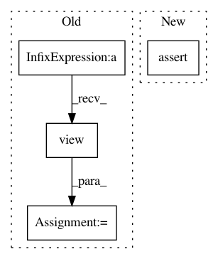

e3d577b5595af3e1c9a05d3be84dbdf1a7c4aa20,nilearn/datasets/tests/test_struct.py,,test_fetch_oasis_vbm,#Any#Any#,104
Before Change
def test_fetch_oasis_vbm(tmp_path, request_mocker):
local_url = "file://" + tst.datadir
ids = np.asarray(["OAS1_%4d" % i for i in range(457)])
ids = ids.view(dtype=[("ID", "S9")])
tst.mock_fetch_files.add_csv("oasis_cross-sectional.csv", ids)
// Disabled: cannot be tested without actually fetching covariates CSV file
dataset = struct.fetch_oasis_vbm(data_dir=str(tmp_path), url=local_url,
After Change
assert isinstance(dataset.white_matter_maps[0], str)
assert isinstance(dataset.ext_vars, np.recarray)
assert isinstance(dataset.data_usage_agreement, str)
assert request_mocker.url_count == 1
dataset = struct.fetch_oasis_vbm(data_dir=str(tmp_path),
dartel_version=False, verbose=0)
assert len(dataset.gray_matter_maps) == 415
In pattern: SUPERPATTERN
Frequency: 3
Non-data size: 4
Instances
Project Name: nilearn/nilearn
Commit Name: e3d577b5595af3e1c9a05d3be84dbdf1a7c4aa20
Time: 2020-07-29
Author: jerome@dockes.org
File Name: nilearn/datasets/tests/test_struct.py
Class Name:
Method Name: test_fetch_oasis_vbm
Project Name: rusty1s/pytorch_geometric
Commit Name: 455a0dc9a98212089a7201a025670c33a1770f67
Time: 2017-10-23
Author: matthias.fey@tu-dortmund.de
File Name: torch_geometric/nn/functional/spline_gcn_test.py
Class Name: SplineGcnTest
Method Name: test_backward
Project Name: mariogeiger/se3cnn
Commit Name: 6c06a88957549b1405f43361e4aa911abc56ef66
Time: 2018-10-04
Author: geiger.mario@gmail.com
File Name: se3cnn/kernel.py
Class Name: SE3Kernel
Method Name: combination